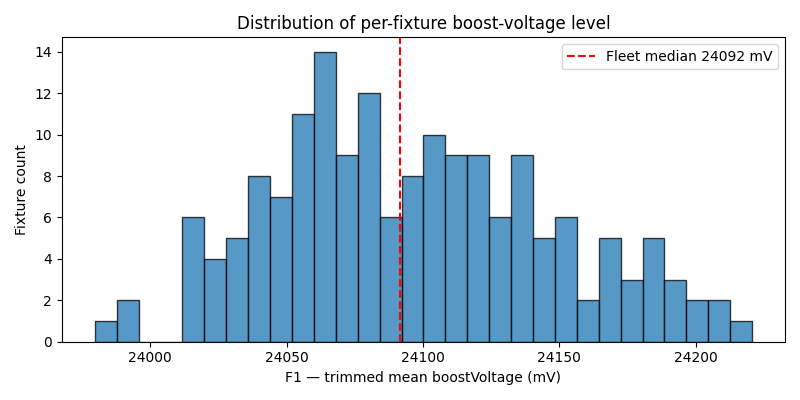
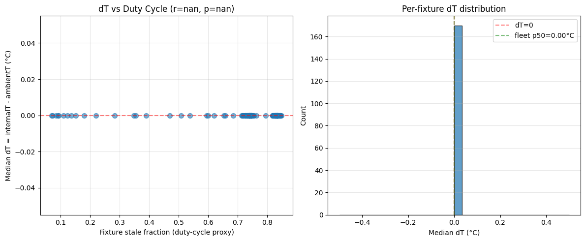
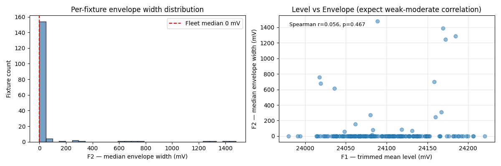
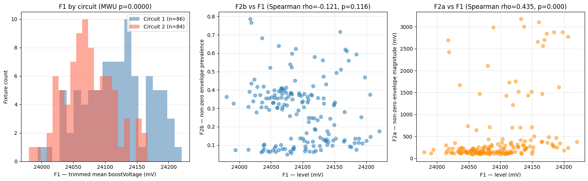
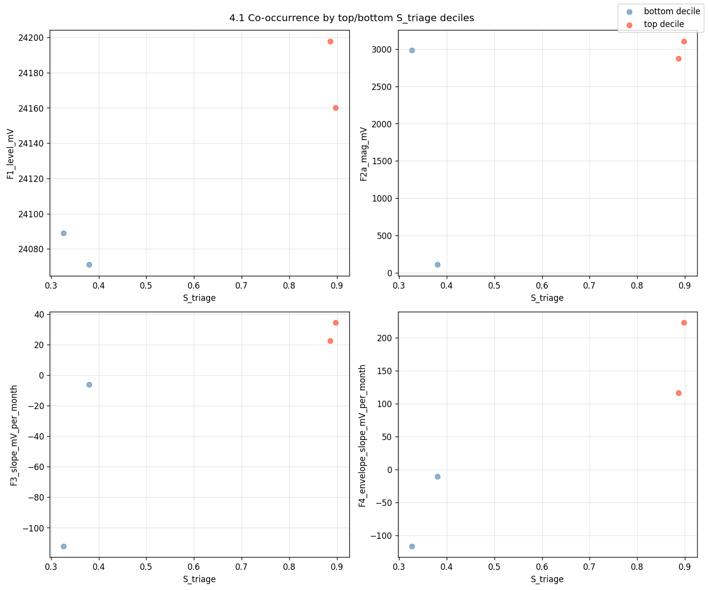
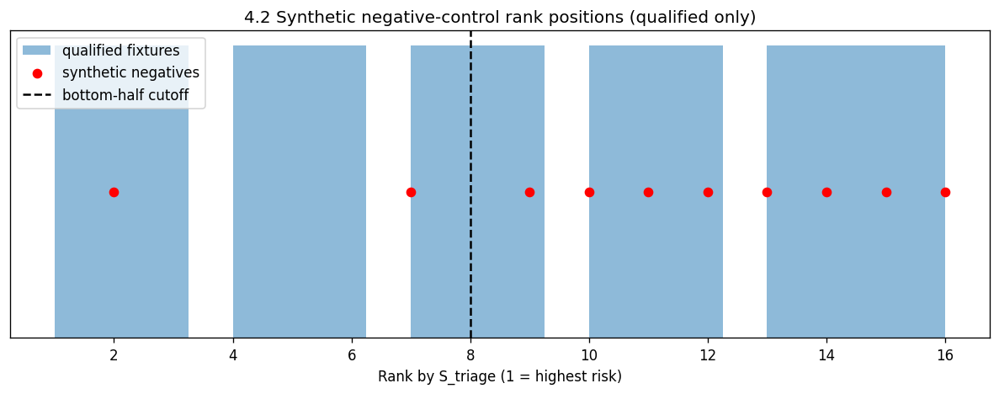

From reactive light replacement to physics-grounded maintenance triage
Data reality
The strongest signal is electrical. Several tempting signals are unusable.
Primary dataset
YYC: 170 fixtures, two circuits, about 2M events, 53 metrics, mid-2025 to early 2026.
Usable core
boostVoltage, boost min/max envelope, stale/lastSeen, and limited environmental context.
Rejected signals
LED temperatures are sentinel-flat at 25 C. Heater and magnetic metrics are sentinels. Thermal differential collapses.
170fixtures
2circuits
15-25batches per fixture
72%mean stale events

Boost-voltage level is real, measured across all fixtures, and usable after zero filtering.

Thermal proxy was tested, then dropped because it did not provide a trustworthy degradation leg.
Physics-grounded indicator
We score what aging should change under a constant-current driver.
LED side
As LEDs age, defect accumulation and series resistance can increase required forward-voltage support. We capture this with boost-voltage level and level drift.
Driver side
Power-chain stress and capacitor wear can widen or worsen boost-voltage envelope behavior. We capture this with non-zero envelope magnitude and envelope drift.
Scoring
Rank features within circuit, combine LED and driver sub-scores symmetrically, then expose confidence from window count, span, and stale fraction.
Capacitance loss or ESR growth can widen the boost-voltage envelope, which motivates the driver-side score.
Thermal aging model, not used for scoring
k_degradation = A exp(-E_a / k T_j)
This is the correct physics for temperature acceleration, but the available data lacks real LED junction temperature, so we do not claim Arrhenius-calibrated degradation.

Non-zero envelope windows carry meaningful variation; zero-width windows are handled as a data artifact.

Circuit offset is real, so raw cross-circuit comparison is invalid. Scores are normalized within circuit.
Validation without labels
We validate against physics-shaped behavior, not against unavailable failure labels.
Co-occurrence
Top triage fixtures show coherent elevation across boost level, envelope magnitude, and drift features.
Negative control
Fixtures selected for low boost variation and high stale activity should rank low after suppression logic.
Sensitivity
Alternative weighting does not catastrophically invert the qualified fixture ranking.

Top-decile fixtures are not high because of one isolated spike; multiple electrical stress features move together.

The negative-control lane highlights communication-coupling risk and keeps low-evidence fixtures from driving decisions.
Honest close
This is a defensible preventive-maintenance triage signal, not a production-grade failure predictor yet.